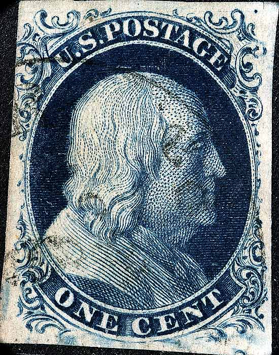
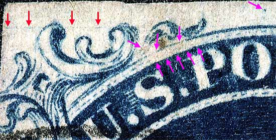
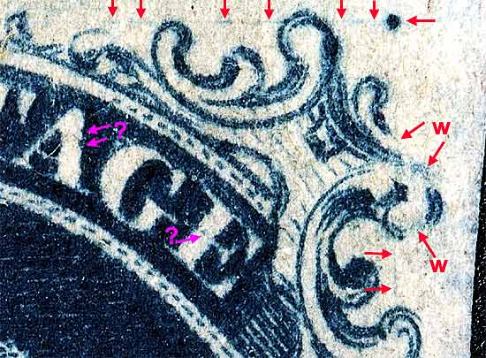
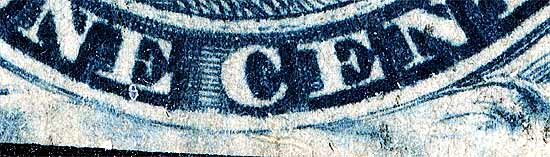
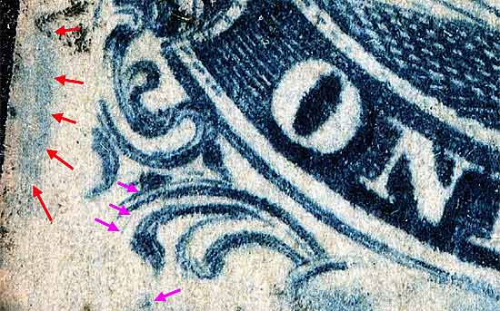

1¢ Franklin Issue of 1851-1857, PLATE 4 Position 5R4 , (Scott #7) |
| Scott #7 Blue, Type II, Relief A, Transfer Roller Number 2. Issued both imperforate and perforate. Had this been a perforate copy then it would be Scott Number 20. The top row "A" relief on Plate 4 is the only row that has the FULL DESIGN at the top. Note that Ornaments "S", "U", "X" and "Z" are complete. The plating of this particular stamp was done more or less by a "committee of platers" than by plating marks shown in the Ashbrook/Neinken diagrams. Many top row positions on plate 4 are similar, and also, due to plate wear, they changed their appearance notably in a short period of time. One of the most annoying aspects of trying to identify Plate 4 positions is the rapid change in appearance and the disappearing plating marks. |
|  |
| Figure 1. (BELOW) Guide line as indicated in Neinken (red arrows). The dashes above "S" of US and "P" of POSATGE are weak or missing. The top curved line below Ornaments "U" and "V" is also weak. The dot above "O" of POSTAGE is also not indicated in the plating diagrams. (violet arrows)  |
| Figure 2. (BELOW) Top row GUIDE DOT and faint scribe lines as indicated in Neinken. The arrows shown with "W" indicate weakly transfered or worn features which aided in identifing this position. This is not shown in the plating diagrams. The violet arrows are not known if constant.
 |
| Figure 3. (BELOW) The curved outer frameline at the bottom and blurs at the bottom. Students of this issue are finding consistent variation in these two characteristics position by position, but the plating diagrams are not accurate or consistent in showing or discussing them. As more positions become available to the Archive an update will be made.  |
| Figure 4. (BELOW) A large blur of color technically part of Position 4R4.
 |
| DISCLAIMER and COPYRIGHT INFORMATION: Thanks for visiting this site. I hope you learn something new as we are making new discoveries all the time. You, the visitor, have my permission to link to my pages and to share the INFORMATION with others. The images themselves fall under the fair use guidelines established by the United States Congress and Copyright law. Basically contact us before using. I also ask in return that you send me an e-mail if I have made a mistake, or have made some other technical blunder that in my rush to put these pages up would cause the visitor confusion. Please also visit my other website at www.slingshotvenus.com. and support the live music arts. While your there, be sure to purchase our music. There are not many philatelic rock stars around and we need all the help we can get. :-) I can be reached at: nerdman@ix.netcom.com |